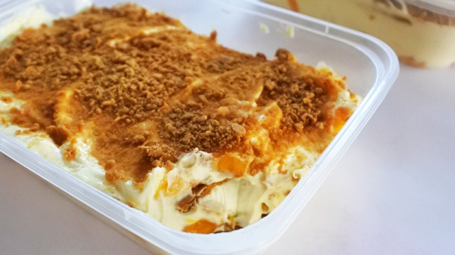

Mango Float Recipe

Ingredients
- Mangoes
- All purpose cream
- Condensed milk
- Graham crackers
Steps
- Whip all purpose cream and then add condensed milk to make the filling.
- Put a layer of graham at the bottom of a container.
- Add the filling.
- Add the mangoes
- Repeat step 3 & 4 until the container is full. The last layer should contain filling.
- Break some graham crackers and add as garnish to the last layer.
- Let chill for at least 5 hours.